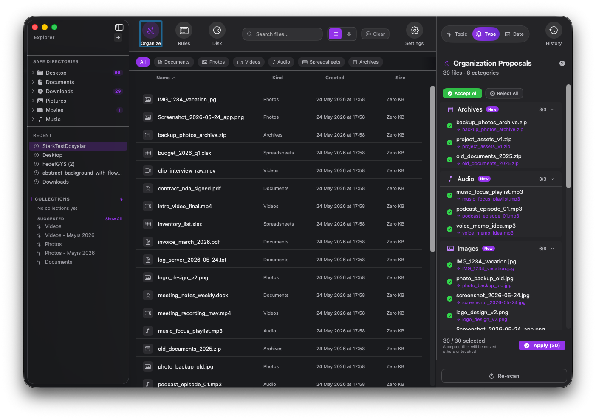
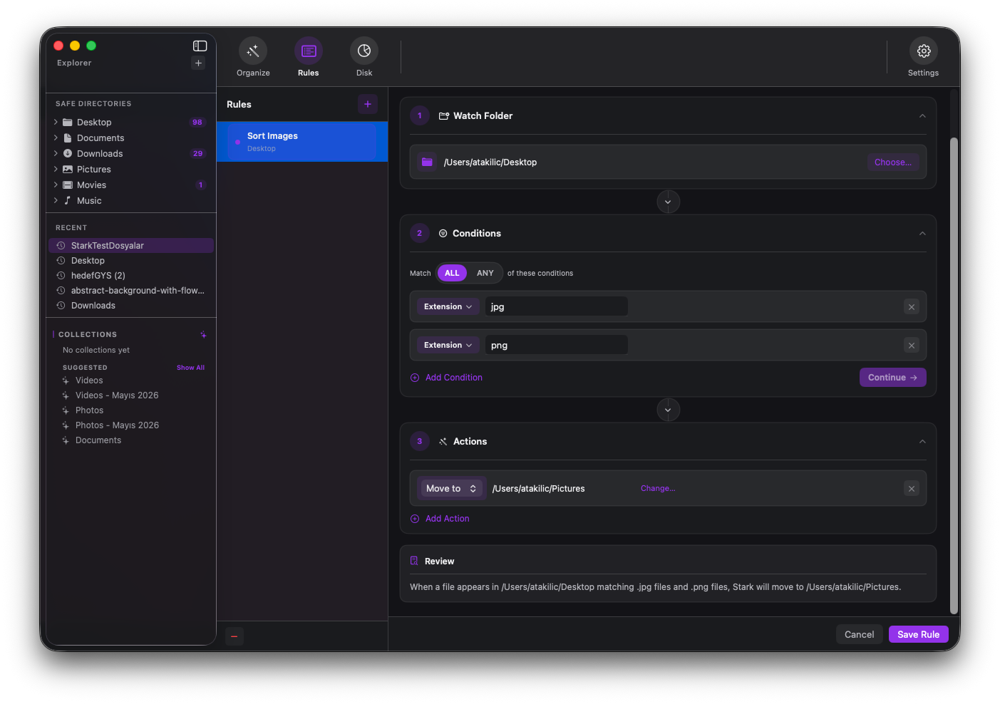
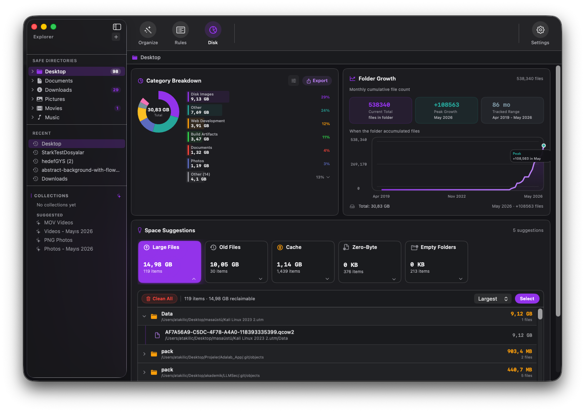

$0
to try it out
- Up to 30 files per organize session
- 1 active folder rule
- Basic disk analysis
- Unlimited organizing
- Unlimited rules
Free to download · For macOS
One click organizes a folder by Topic, Type, or Date. Rules keep the next mess away. Disk view shows what is eating your space.
Free to try · No account needed · Works fully offline
You ask. Stark acts. — Scroll to watch
Stark does exactly this, locally on your Mac.
Turn a crowded folder into clean groups with one approval.
Build simple rules like Desktop PNGs go to Pictures.
Find large files, cache, empty folders, and wasted space.
Main feature
Choose Topic, Type, or Date and Stark proposes a full move plan before anything changes. Accept all, reject a few, or undo the whole session later.
Invoices, photos, videos, docs, and projects land in folders that match what they are about.


Rules
Watch a folder, match a condition, run an action. A screenshot hits Desktop, a PNG rule moves it before the clutter has time to settle.
Disk
Stark's disk view surfaces large files, old files, cache, zero-byte files, and empty folders so cleanup starts with evidence instead of guessing.

Workflow
The product video shows the flow from selecting a folder to reviewing proposals and applying the result.
Pricing
Start free and organize as you go. Unlock everything once - no subscription, no renewal, no account.
Mac App Store
No cloud account, no background mystery, no blind cleanup. Stark shows the plan, applies only what you approve, and keeps history for undo.
Download Free · Mac App Store